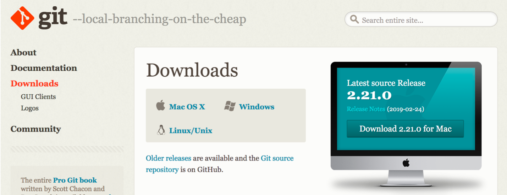
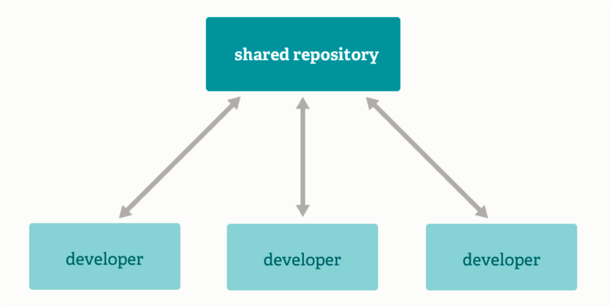
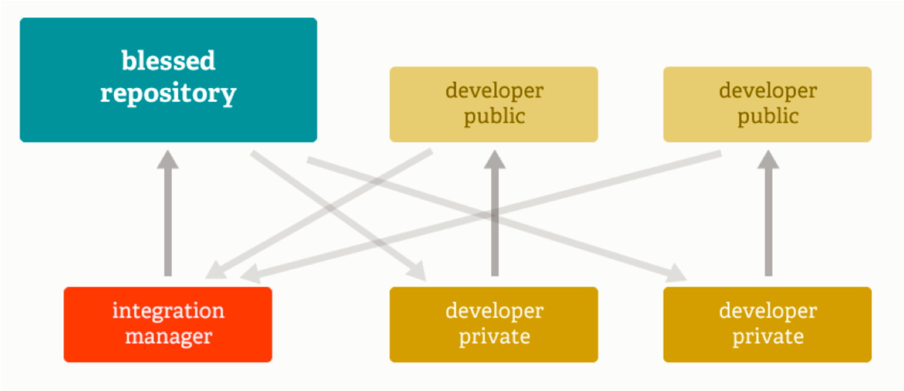
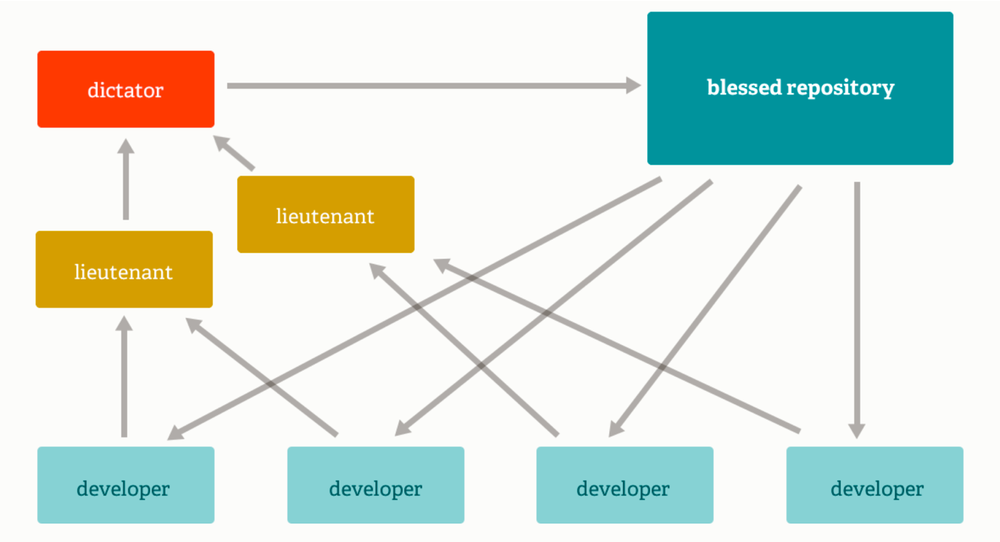

What is Git?
Git is an...
open-source,
distributed,
version control system
designed for speed and efficiency
that supports multiple workflow types
Version Control

Version control is a system that records changes to a file or set of files over time, so
that you can recall specific versions later
- Git-SCM
Think of version control as a time machine that
let's you look at history and go forwards and backwards though it!
Open-Source
“Git is released under the GNU General Public License version 2.0, which is an open source license. The
Git project chose to use GPLv2 to guarantee your freedom to share and change free software---to make
sure the software is free for all its users.” Git SCM - About

Distributed
Everything is fast
Every clone is a backup
You can work offine
Distributed
No network needed to...
- Perfom a diff
- View file history
- Commit changes
- Merge branches
- Obtain another revision of a file
- Switch branches
Supports Any Workflow Type
Subversion-Style Workflow Supports Any Workflow Type
Integration Manager Workflow Supports Any Workflow Type
Dictator & Lieutenants Workflow Distributed
Git vs. SVN
Centralized